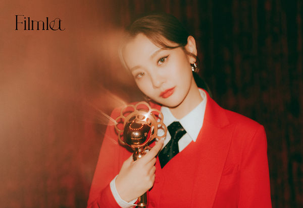

NEWS
-

오마이걸, 美 타임지 선정 '2020년 기념비적인 K팝 대표 노래'
"오마이걸(OH MY GIRL)이 미국 타임지가 선정한 '2020 올해의 K-POP 노래'에 선정됐다.미국 타임지는 최근 ‘2020년 기념비적인 K-POP 노래와 앨범(The Songs and Albums That Defined K-Pop's Monumental Year in 2020)’을 발표했다. 오마이걸의 미니 7집 앨범 'NONSTOP'의 타이틀곡 '살짝 설렜어 (Nonstop)'는 올해의 K-POP 노래로 선정됐다.타임지는 "올해 다수의 K-pop 걸그룹들이 어둡고 섹시한 콘셉트에 이끌렸던 것에 반해 오마이걸은 밝고 앳되어 보이는 이미지를 담고 있다"며 오마이걸의 차별성에 대해 주목했다. 또한 “싱그러움에도 불구하고 성숙한 사운드를 가지고 있다. '살짝 설렜어'라고 반복되는 구절은 색다른 매력을 더한다"며 높게 평가했다.한편, 오마이걸은 지난 4월 미니 7집 앨범 ‘NONSTOP’을 발매해 타이틀곡 ‘살짝 설렜어 (Nonstop)’로 각종 음원사이트 1위뿐만 아니라 음악방송 8관왕의 기염을 토하며 최고의 성적을 이뤄냈다. 활발한 개인 활동을 하며 올 한해 최고의 걸그룹으로 자리매김, 뜨거운 인기를 모으고 있다." -
'6인 재편' 온앤오프(ONF), 신곡 'WHY' 컴백 앨범 포인트 공개
"온앤오프는 지난 7일 오후 6시 네 번째 미니 앨범 ‘GO LIVE’를 공개해 뜨거운 화제를 모으고 있다. 새롭게 6인조로 컴백한 온앤오프의 공식적인 첫 음악 방송 무대에 앞서 컴백 앨범 포인트를 짚어봤다.#명곡 제조기... “믿고 듣는 온앤오프”온앤오프의 지난 앨범 타이틀곡 ‘사랑하게 될 거야’, ‘Complete’등이 유명 아이돌 커뮤니티와 SNS에서 ’숨겨진 명곡‘으로 재조명되며 꾸준한 인기를 얻고 있다. 이번 앨범 역시 데뷔 때부터 함께 작업한 모노트리가 프로듀싱을 맡았다. 타이틀곡 ‘WHY’는 모노트리의 황현 작곡가와 멤버 MK가 공동 작업한 노래로 상대방을 좋아하면 좋아할수록 점점 망가져가는 자신을 멈출 수 없는 이유를 되묻는 내용을 담고 있다. " -

시크한 볼빨간사춘기가 온다…빨간 슈트+카리스마 눈빛
"가수 볼빨간사춘기의 수록곡 ‘빨간 립스틱’의 컨셉 포토가 공개됐다.29일 오후 소속사 DM엔터테인먼트는 공식 SNS를 통해 볼빨간사춘기의 싱글앨범 ‘필름릿(Filmlet)’의 두 번째 컨셉 포토를 공개했다.두 번째 컨셉 포토는 수록 곡 ‘빨간 립스틱’의 컨셉으로, 앞서 보여준 귀여운 컨셉과 상반된 시크한 매력을 보여주고 있다.빨간 슈트를 입고 시크한 눈빛으로 바라보는 안지영의 모습에서 볼빨간사춘기만의 ‘걸크러쉬’가 느껴져 그 동안 볼 수 없었던 새로운 컨셉을 기대하게 한다."
-
공효진, 세월이 흘러도 영원한 공블리..펭귄과 깜찍 투샷 "귀요미"
"공효진이 러블리한 비주얼을 자랑했다. 12일 공효진은 자신의 인스타그램을 통해 "귀요미"라는 글과 함께 근황을 담은 두 장의 사진을 게재했다. 공개된 사진 속에는 공효진이 패딩에 귀여운 보라색 털모자를 쓰고 있다. 귀여운 펭귄과 함께 '공블리' 다운 러블리한 매력을 뿜어내고 있는 공효진이 눈길을 사로잡는다. 한편 공효진은 지난 2019년 KBS 2TV 드라마 '동백꽃 필 무렵'을 통해 신드롬적인 인기를 끌었다. 현재 차기작을 검토하고 있다. 공효진은 절친 손담비와 MBC '나 혼자 산다'에 출연해 일상을 공유하기도 했다. "
-
강율→송중기, 이색 직업 출신들의 활약…'용루각' 기대감 ↑
"뷔 전 이색 이력으로 시선을 모은 배우들이 올겨을 스크린과 브라운관을 뜨겁게 달구며 눈부신 활약을 예고해 눈길을 끈다.3일 개봉하는 '용루각:비정도시' 속 세상 두려울 것 없는 재범으로 분해 강렬한 첫 스크린 데뷔를 알린 배우 강율을 필두로 '승리호' 송중기, tvN 예능 '나는 살아있다' 이시영, 그리고 드라마 '결혼작사 이혼작곡' 성훈이 바로 그 주인공이다.먼저 '승리호'에서 돈이 되는 일이라면 뭐든 하는 우주 쓰레기 청소선 조종사 태오 역을 맡은 송중기는 중학생 시절까지 쇼트트랙 선수로 활동, 당시 전국 체전에도 두 차례 출전한 유망주로 익히 알려져 있다. 이제는 대체불가한 배우로 자리 잡으며 3년 만에 스크린 복귀를 알린 배우 송중기와 '늑대소년'에 이어 다시 만난 조성희 감독의 호흡이 기대를 모으는 가운데, 한국형 우주 SF 블록버스터 탄생을 예고한 영화 '승리호'는 넷플릭스를 통해 개봉 예정이다."
-
“공유 아닌 공지철, 진짜 평범해”…공유, 이토록 인간적인 배우라니
"’유퀴즈' 배우 공유가 솔직한 매력을 뽐냈다.지난 25일 방송된 tvN 예능 '유 퀴즈 온 더 블럭'(이하 '유퀴즈')에서는 자기들 마음대로 떠나는 사람 여행을 담아 '어떻게 살 것인가' 주제로 이야기를 나눈 가운데 공유가 출연했다.특히 공유가 등장하자, '유퀴즈'는 수도권 가구 기준 평균 5.6%, 최고 8.3%, 전국 가구 기준 평균 4.9%, 최고 6.9%를 하며 2018년 첫 방송 이후 자체 최고를 경신했다. (케이블, IPTV, 위성 통합한 유료플랫폼 기준/닐슨코리아 제공)이날 공유는 '유퀴즈' 출연 이유에 대해 "평소 좋아하는 프로그램이었다. 유재석 씨에게도 사적으로 기획이 너무 좋다고 말씀 드린 적이 있다"고 밝혔다.공유는 오는 12월 영화 '서복'의 개봉을 앞두고 있다. 공유는 영화에 대해 설명한 한 뒤, 함께 연기한 박보검에 대해 언급했다.공유는 "박보검 씨가 캐스팅 됐다는 소식을 듣고 촬영하면서 '영화 개봉하면 보검이 덕분에 좀 편하겠다'며 행복한 상상을 했는데 보검이가 바람처럼 사라져 버렸다"며 입대로 인한 박보검의 빈자리를 아쉬워했다."
-
'구미호뎐' 이동욱♥조보아, 운명의 굴레 벗어날까
"종영까지 2화만을 남겨둔 tvN 수목드라마 '구미호뎐'이 마지막까지 주목해야 할 '막판 관전 포인트'를 공개했다.'구미호뎐'은 도시에 정착한 구미호와 그를 쫓는 프로듀서의 매혹적이고 잔혹한 판타지 액션 로맨스 드라마다. '구미호뎐'은 설화에 대한 재해석은 물론 판타지와 액션, 로맨스를 넘나드는 풍성한 서사를 통해 시청자들에게 신선함을 안기며 뜨거운 호응을 얻고 있다. 이와 관련 결말을 향한 최종 관문인 15, 16화 시청을 앞두고 놓치지 말아야 할 '최종 키워드'를 정리해봤다."
-
이은재, '이 미모 실화?' 선 넘은 '상큼美'...'심쿵주의'
"[뉴스컬처 김인창 기자] 배우 이은재가 SNS를 통해 일상을 공개했다.그녀는 본인의 인스타그램에 "#2020 골든글러브"라는 글과 함께 사진을 게재했다.공개된 사진 속에는 입가에 미소를 띤 채 근접 셀카를 촬영하는 긴 생머리 이은재의 모습이 담겼다.특히 그녀의 근접에서도 러블리 매력 폭발하는 미소가 보는 이들의 팬심을 저격한다.이은재의 나이는 1997년생(올해 24세)이다.한편, 그녀는 인기 웹드라마 ‘일진에게 찍혔을 때’에서 주인공 김연두 역으로 출연하며 안정적인 연기력으로 시청자들에게 눈도장을 찍었으며, JTBC 월화드라마 ‘18 어게인’에서 18년 전 리즈 시절로 돌아간 남편의 세림고등학교 2학년 동급생인 ‘엄소미’ 역으로 출연하며 열연을 펼쳤다."